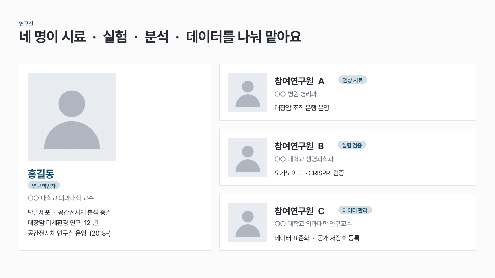
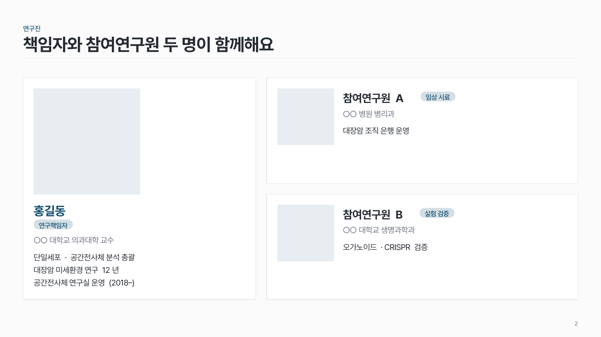

연구진 카드 people-01
책임자는 왼쪽에 크게(사진 위, 글 아래), 참여연구원은 오른쪽에 같은 크기로 쌓아요.

이 시안
책임자 + 참여 3 (사진 자리 표시)
슬라이드 제목: 네 명이 시료 · 실험 · 분석 · 데이터를 나눠 맡아요
언제 쓰나
책임자와 참여연구원의 얼굴, 소속, 역할을 한 장에서 소개할 때요. "누가 무엇을 맡는가"를 알아야 하는 과제 발표에 맞아요.
구성
- 책임자 칸을 왼쪽에 가장 크게 (참여연구원 칸의 1.5–2배).
- 참여연구원 칸은 오른쪽에 같은 크기로 쌓아요.
- 칸마다 사진 + 이름 + 역할 라벨 + 소속 + 약력.
지킬 것
- 카드는 4개 이내 (책임자 1 + 참여 3).
- 사진은 모두 정사각형, 같은 크기, 가로 2.5cm 이상.
- 약력은 사람당 3줄 이내.
- 강조는 책임자 이름 한 곳.
하지 말 것
- 참여연구원 칸을 책임자 칸과 같은 크기로 두지 않아요.
- 사람마다 사진 크기·비율을 다르게 쓰지 않아요.
- 논문 목록이나 수상 경력을 모두 늘어놓지 않아요.
시안 비교
같은 내용을 옵션만 바꿔 그렸어요. 그림을 누르면 크게 보여요.
A책임자 + 참여 3 (사진 자리 표시)
슬라이드 제목: 네 명이 시료 · 실험 · 분석 · 데이터를 나눠 맡아요

B같은 내용 → 참여 2 · 사진 없음
슬라이드 제목: 책임자와 참여연구원 두 명이 함께해요